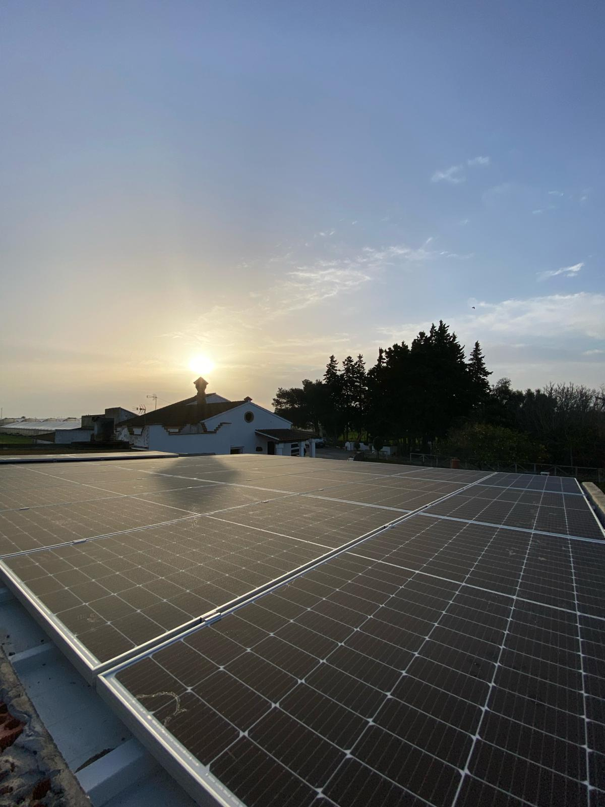
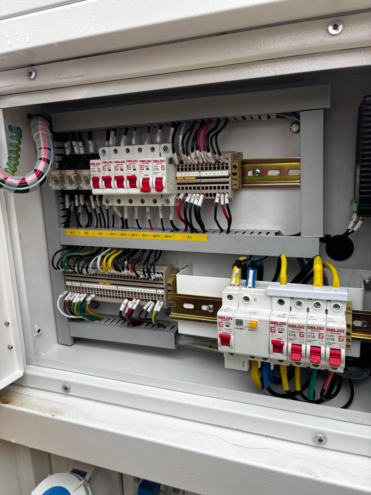

Servicios ROMILUZ
SERVICIOS ROMILUZ
Autoconsumo solar
Estudiamos tu consumo y diseñamos una instalación conectada a red, con paneles, inversor, protecciones y monitorización.
Baterías y backup
Una batería puede mejorar el aprovechamiento de la energía. Para disponer de suministro durante un corte de red hace falta un sistema de backup compatible, diseñado para las cargas que quieras alimentar.
Solicitar estudio →
SERVICIOS ROMILUZ
Aisladas y baterías
Soluciones para viviendas rurales, fincas y otros emplazamientos sin conexión eléctrica: paneles, inversores/cargadores, baterías, reguladores y protecciones.
Autonomía a tu medida
Revisamos consumos, potencia de arranque y autonomía necesaria. Cuando el proyecto lo requiere, estudiamos la integración de un generador auxiliar.
Solicitar estudio →
SERVICIOS ROMILUZ
Instalaciones eléctricas
Instalaciones nuevas, reformas, ampliaciones, cuadros y protecciones, iluminación, nuevas líneas, averías y documentación cuando corresponda.
Domótica y seguridad
Control de iluminación, programación, dispositivos inteligentes, accesos, cámaras y monitorización, según las necesidades del proyecto.
Solicitar estudio →
SERVICIOS ROMILUZ
Puntos de recarga
Instalación de cargadores en viviendas, garajes comunitarios y empresas. Estudiamos el cuadro, el recorrido de línea y las protecciones.
Carga adaptada a tu instalación
Valoramos el balanceo dinámico y la integración con fotovoltaica. Configuración y puesta en marcha de los equipos seleccionados para cada caso.
Solicitar estudio →
SERVICIOS ROMILUZ
Camper y autocaravanas
Instalaciones y ampliaciones de 12/24 V y 230 V: solar, MPPT, baterías auxiliares, carga desde alternador, inversores, iluminación y protecciones.
Instalación, ampliación y diagnóstico
Estudiamos los consumos y el espacio disponible. Las consultas de náutica se revisan con criterios técnicos específicos para embarcaciones.
Solicitar estudio →